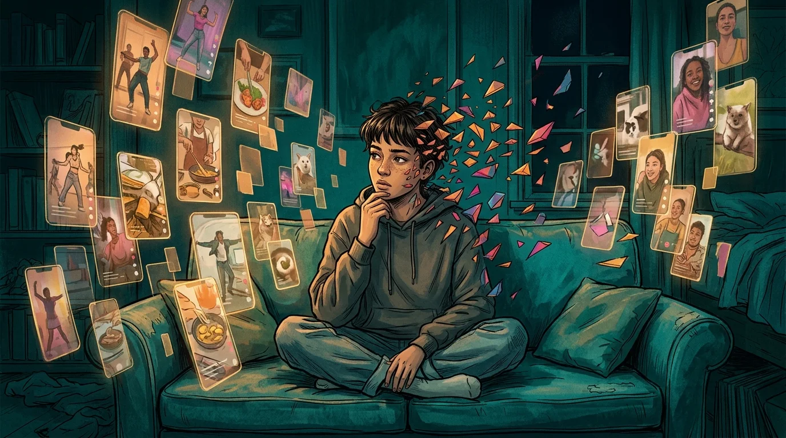

Is TikTok Giving You ADHD, or Is It Just Brain Rot?
Your attention span isn't broken. It's being trained—by an algorithm that profits from your inability to look away.

You told yourself you'd watch one video. Just one. Something about a cat failing at parkour, maybe a cooking hack you'll never actually try. That was forty-five minutes ago. Your neck hurts. Your thumb is still swiping. And the thing you sat down to do—the assignment, the email, the workout—feels impossibly far away now, like it belongs to a different person in a different timeline.
You lock your phone. You open your laptop. You stare at a blank document and realize you can't hold a single thought for more than eight seconds. Something is wrong with you, right?
Not exactly. TikTok brain rot is the colloquial term for the cognitive fog, shortened attention span, and reduced ability to focus that comes from excessive short-form video consumption. It's not a clinical diagnosis, but the neurological effects are real: heavy TikTok use can produce symptoms that look almost identical to ADHD—restlessness, inability to sustain attention, compulsive task-switching—without the underlying neurodevelopmental condition. The distinction matters, because one requires professional treatment and the other requires architectural change.
What "Brain Rot" Actually Means
The term—Oxford's 2024 Word of the Year—sounds like internet hyperbole. It isn't.
When you watch TikTok, your brain receives a new stimulus every 15 to 60 seconds. Each swipe delivers a micro-dose of novelty—a fresh face, a new joke, a different emotional register. Your dopamine system doesn't just respond to pleasure; it responds to prediction error, the gap between what you expected and what you got. TikTok is essentially a prediction-error machine, delivering an endless stream of surprises calibrated by an algorithm that knows exactly what will keep your thumb moving.
Over weeks and months, this trains your reward circuitry to expect constant rapid stimulation. Reading a book becomes excruciating. Sitting through a ten-minute YouTube video feels like punishment. A conversation without a punchline every fifteen seconds starts to feel like it's buffering. Your baseline tolerance for boredom collapses. That's brain rot. Not damage in the traumatic sense, but a recalibration of what your nervous system considers "normal."
This is the same pattern behind doomscrolling—the endless consumption of low-value content driven by algorithms that exploit your dopamine loops. TikTok just does it faster. And it's not just TikTok—Instagram Reels triggers the same compulsion loop through identical variable-ratio reinforcement mechanics.
The TikTok-ADHD Connection
Here's where it gets confusing. ADHD—attention deficit hyperactivity disorder—is a neurodevelopmental condition present from childhood. It involves structural differences in dopamine regulation, executive function, and working memory. You can't "get" ADHD from an app.
But you can develop symptoms that mimic it so convincingly that the line blurs.
A longitudinal study from the ABCD cohort, tracking over 8,000 children, found that social media use was associated with increased inattention symptoms over time—and critically, children with existing attention problems didn't start using more social media, suggesting the relationship runs from screen to symptom, not the other way around.
The mechanism is straightforward. ADHD brains struggle with dopamine regulation by default. TikTok-trained brains struggle with it by habit. The subjective experience—sitting at your desk, unable to start the thing you need to do, reaching for your phone instead—feels identical.
Is It ADHD or Just Your Feed?
If you've always had trouble focusing—in school, at work, in conversations, long before TikTok existed—it's worth talking to a professional about ADHD. Genuine ADHD doesn't emerge in your twenties because you downloaded an app.
But if your attention problems coincide suspiciously with your screen time going from one hour to four, and you can still hyperfocus on things you find genuinely interesting, you're probably looking at acquired attention fragmentation. Your brain isn't broken. It's been trained.
The good news? Training is reversible.
Breaking the Cycle
The instinct is to go cold turkey. Delete the app. Lock the phone in a drawer. But if you've tried that, you already know what happens. You reinstall it within 72 hours, usually at 11 PM when you can't sleep. Willpower alone doesn't work against systems designed by thousands of engineers to keep you engaged.
What works is friction—small, intentional barriers between you and the automatic behavior. Not walls. Speed bumps.
The same principle underlies digital minimalism: you don't have to delete everything. You just need to add enough pause that opening the app becomes a conscious choice rather than a reflex.
Gradually reintroduce longer-form content. Read an article all the way through. Watch a 20-minute video without checking your phone. Sit with boredom for five minutes without filling it. Each of these small acts is neuroplastic resistance training—you're teaching your dopamine system that stimulation doesn't have to arrive every fifteen seconds.
One of the most effective app blockers for iPhone takes this friction-based approach. Sip & Scroll doesn't lock you out. It doesn't punish you. It simply asks you to take a sip of water and snap a selfie before opening TikTok, Instagram, or whatever app pulls you in. That five-second pause breaks the automatic loop. You get 45 minutes of unblocked access, then another sip to continue. It turns a mindless reflex into a small, hydrating ritual.
Your attention span wasn't built to withstand an algorithm optimized by billions of data points. That's not a moral failing. But recognizing the pattern—and building the architecture to interrupt it—is something you can do right now. Your brain adapted to rapid stimulation. It can re-adapt to sustained focus. Research shows significant improvement after a two-week digital detox.
The feed will always be there. The question is whether you open it on autopilot, or on your terms.
Take back your attention span
Add a sip of water between you and the algorithm. One small pause, one big shift.
Download Sip & Scroll